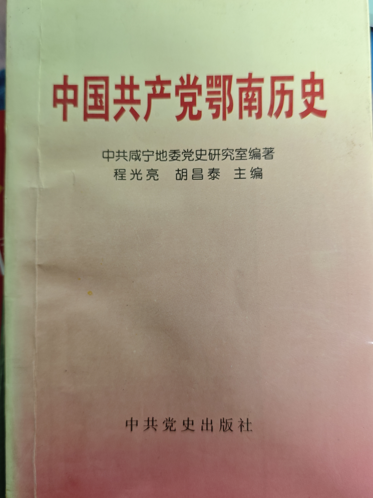
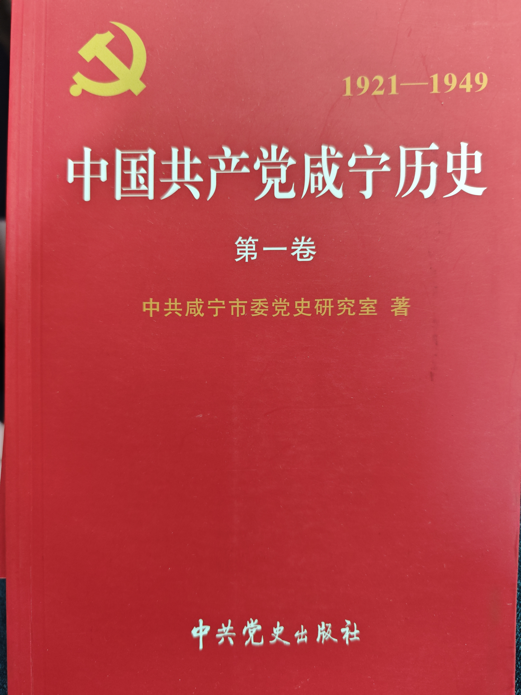
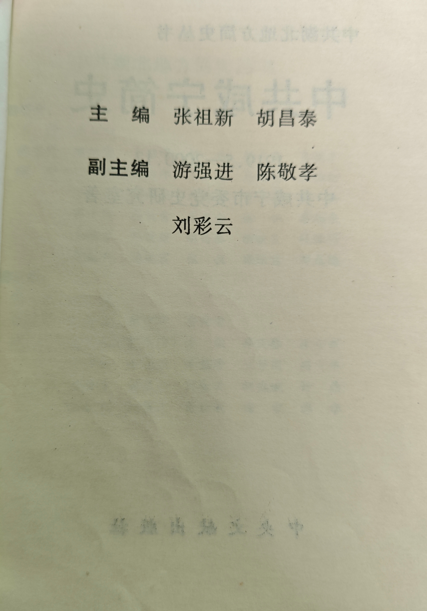
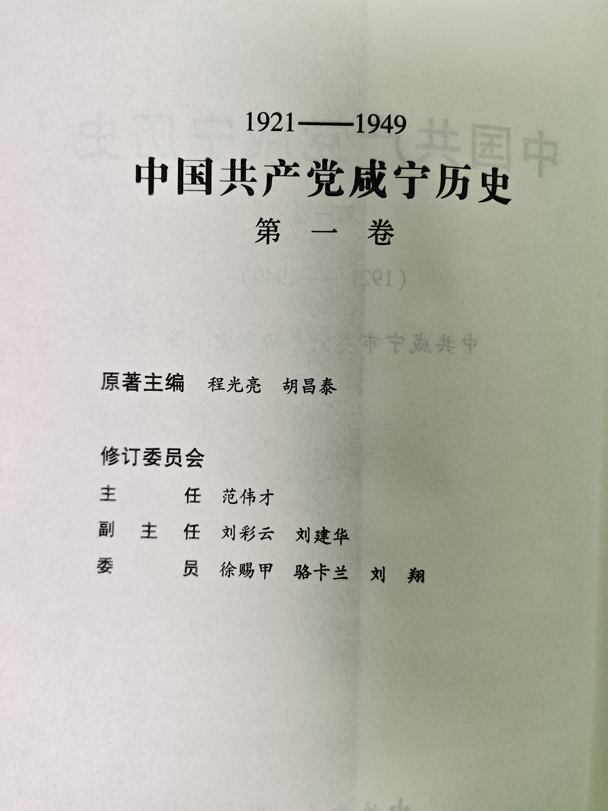
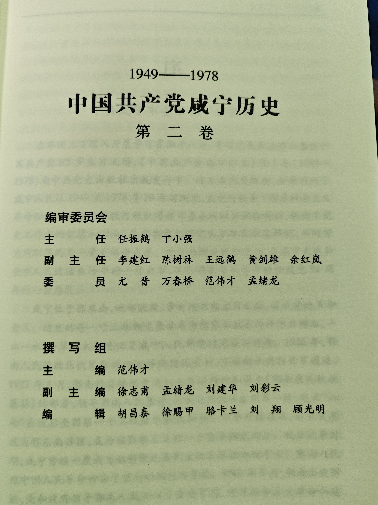
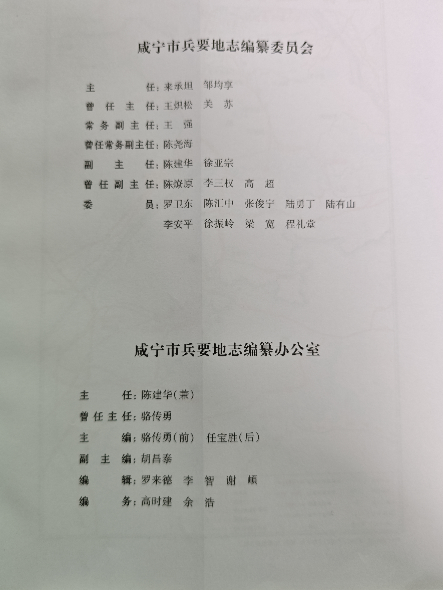
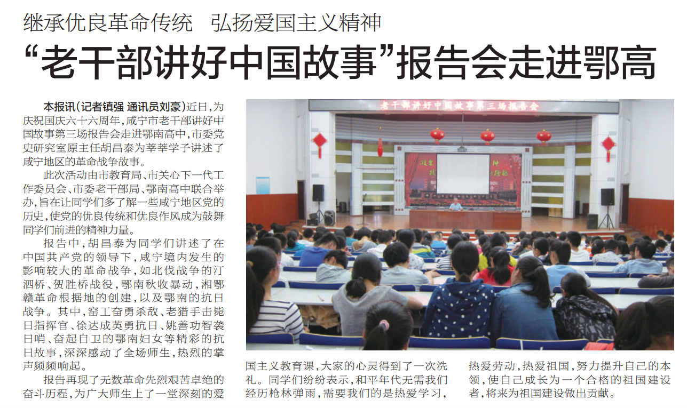

胡昌泰
人物概览
胡昌泰，1944 年 4 月 17 日出生于湖北黄冈，1960 年参加工作。历任阳新综合农场文秘、阳新县委宣传部干事、咸宁报社编辑记者（15 年）、咸宁地委政研室副主任、咸宁市委党史研究室主任（正县级调研员）。2004 年 6 月正式退休。
他是咸宁本土党史研究领域的领军人物，2001 年获评全省党史系统先进个人，所在单位被评为全省先进单位。退休后仍"离岗不离心、退休不褪色"，被市委聘为党史专家，持续参与评审、宣讲，并受邀在军分区主持编撰《咸宁市兵要地志》。
一张时间地图
回忆录
第一章 · 少年时代的转折（1944–1960）
自述：放弃高中，改读师范
我原本放弃了就读黄冈高中的机会，改读黄冈师范学校，准备一年后出来当小学老师。那时候想法很简单——早点工作，早点分担家里的负担。
但人生常常有意外的转折。父亲当时在阳新综合农场生产队任支部书记，赶上了一个政策：农场支部书记以上的干部，家属可以迁来，初中毕业以上的子女可以参加农场的招干考试。父亲来信问我要不要试试。
我决定试一试。先是初选，20 人参加考试，最后录取 5 人。我是那 20 人里年龄最小的，但因为在黄冈一中读书时当过学生会副主席、宣传部长，表达能力还可以，面试时被录用了。
第二章 · 从农场起步（1960–1970）
1960 年 12 月 20 日，我正式到阳新综合农场报到，这一天开始计算我的工龄。刚去的时候，先种了 3 个月的田。
后来通过招干考试，我留在了农场。从 1960 年到 1970 年 6 月，我在农场整整工作了十年。主要做文秘工作，后来调到办公室。文化大革命时期，上面很重视宣传报道，组织上安排我在农场负责宣传报道，大概干了一年，把农场的宣传报道工作做成了阳新县的先进单位。
第三章 · 报人岁月（1970–1986）
1970 年 6 月，我调到阳新县委宣传部，工作了 11 个月。正好赶上咸宁报社扩招，点名要调我去当编辑记者。1971 年 5 月定下来，6 月我就到了报社，一直干到 1986 年。
在报社工作期间，我读了电大的党政干部班（1983–1985 年），没有脱产，拿了大专文凭，学的是汉语言文学专业。
第四章 · 政研与党史（1986–2004）
地委政研室十年（1986–1996）
1986 年，我调到地委政研室。先当副科长，第二年当科长，四年后当副主任，五年后其中有一年半的时间主持地委政研室的日常工作。
在政策研究与文稿撰写岗位上积累了十年扎实经验，从记录当下转向更深入的思考与谋划。
党史研究室主任（1996.6–2004.6）
1996 年 6 月，我改任党史办主任（这个单位后来改为党史研究室）。在党史办工作期间，2001 年我被评为全省党史系统先进个人，我们单位也被评为全省先进单位。后面两年我改任正县级调研员，但仍然主持工作。
2004 年 6 月，我正式退休。
主导编纂的核心党史著作
牵头编纂了咸宁党史的"正本"系列，均获咸宁市社科类著作二等奖：
• 《中国共产党鄂南历史》（1999）—— 约 35 万字
• 《中共咸宁简史》（2001）—— 后改造扩展为第一卷
• 《中国共产党咸宁历史》第二卷（2013）—— 约 33 万字，主笔第一、二、五编
• 《中国共产党咸宁历史》第一卷（2015）—— 原著主编并参与修订
荣誉
个人荣誉
2001 年，被评为全省党史系统先进个人
集体荣誉
所在单位党史研究室被评为全省先进单位
第五章 · 退休不褪色（2004 至今）
退休之后，被市委聘为咸宁市党史专家，多次参与评审。继续深度参与：
- 党史评审：担任《中国共产党咸宁历史》第三卷（2002–2012）核心评审专家
- 重阳座谈会：参与史志研究中心离退休干部座谈与建言
- 红色宣讲：走进鄂高、中小学开展"老干部讲好中国故事"报告会
- 接受采访：持续关注鄂南秋收暴动等重点课题
《咸宁市兵要地志》编书过程（2015–2018）
因为我先后在多个单位工作过，经验比较丰富，又亲自执笔写过这么多材料、了解这么多情况，退休后军分区邀请我参与著书。
编书的过程是这样的：主要是我手写，军分区有人帮忙打字；军分区提供原始资料；我去采访在职和退役的老兵，包括军分区档案负责人；同时还辅导各人武部做简易小册子。
《咸宁市兵要地志》（截止 2015 年），约 50 万字，2018 年内部非公开出版，副主编。
第六章 · 完整著作与评审清单
一、核心主编 / 牵头编纂
1. 《中国共产党鄂南历史》（1999，约 35 万字）
2. 《中共咸宁简史》（2001）
3. 《中国共产党咸宁历史》第一卷（2015，1921–1949）
4. 《中国共产党咸宁历史》第二卷（2013，1949–1978，约 33 万字）
5. 《咸宁市兵要地志》（2018，约 50 万字，内部刊物）—— 副主编
二、据网络资料补充的参与编纂 / 评审作品
6. 《咸宁党史大事记》（多辑）—— 主导整理
7. 《鄂南英烈传》（续编、修订版）—— 牵头修订
8. 《鄂南党史大事、革命烈士简介》—— 统筹编审
9. 咸宁抗战人口伤亡与财产损失史料汇编 —— 主导调研
10. 《中国共产党咸宁历史》第三卷（2002–2012）—— 核心评审专家
11. 《鄂南秋收暴动》—— 评审
12. 《鄂南建立全国第一个县级红色政权研究》—— 深度参与
13. 《中国共产党湖北省咸宁地区组织史资料（1925–1987）》—— 参编
主要著作
核心著作均获咸宁市社科类著作二等奖

《中国共产党鄂南历史》
1999 · 约 35 万字
主编：程光亮、胡昌泰
中共党史出版社

《中共咸宁简史》
2001
中共咸宁市委党史研究室 著
湖北地方简史丛书

《中国共产党咸宁历史》第一卷
2015 · 1921–1949
原著主编：程光亮、胡昌泰

《中国共产党咸宁历史》第二卷
2013 · 1949–1978 · 约 33 万字
主笔第一、二、五编

《咸宁市兵要地志》
2018 · 约 50 万字
副主编：胡昌泰
内部刊物（机密）
书籍内页与版权信息







社会影响
红色宣讲：走进鄂南高中
2015 年国庆前夕，咸宁市教育局、团市委、市老干办、鄂南高中联合举办"老干部讲好中国故事"报告会。胡昌泰为师生作地方革命史报告，涵盖汀泗桥战役、湘鄂赣革命根据地创建等重大事件，讲述曾洪勇、徐大成、姚山、杨瑞等英雄事迹。

行业评价
核心研究方向：鄂南秋收暴动 · 汀泗桥/贺胜桥北伐战役 · 湘鄂赣革命根据地 · 鄂南抗日战争 · 咸宁红色政权 · "全国首个县级红色政权诞生地"史实考证
家人
家庭信息
家风 · 勤学苦干
写给后人的话
勤学苦干就能创造财富，为社会创造财富，也为你自己创造财富。
就像习总书记说的：幸福生活是干出来的。"
不管是读书阶段的勤学，还是工作阶段的苦干，都是靠一字一句的积累。你和祝捷读研究生，但工作中还是要继续努力。爸爸为了工作经常牺牲休息的时间。小姨先进老师。家家工作的时候吃力，缺少文化，但肯学习，认真地练字。
我希望后辈们记住：勤学和苦干，是我们家代代相传的财富。
一生的注脚
回顾我这一生，从农场起步，历经宣传、新闻、政策研究、党史、军史编纂，岗位在变，但"用笔和思考工作"的底色没变。我始终相信，幸福生活是干出来的，精神财富是勤学苦思积累起来的。我年轻时放弃了更安逸的选择，工作后也常牺牲休息时间用于学习和写作，不是为了别的，只是觉得，人总要为社会、为后人留下点有价值的东西。这是我的"传家宝"——"勤学苦干"，希望你们，以及你们的后辈，能将这份精神接过去。无论读书还是工作，都要靠"一字一句的积累"，一步一个脚印地去创造属于自己的、也能惠及社会的价值。
网络资料
- 咸宁史志中心 — 第三卷专家评审会
http://www.hbdsw.org.cn/gzjx/sxzc/xns/202310/t4653780_mob.shtml - 咸宁史志中心 — 2019 年慰问退休干部胡昌泰
http://szyj.xnnews.com.cn/ztzl/jgdj/201909/t20190910_1822186.shtml - 咸宁新闻网 — 2015 年走进鄂高讲革命故事
http://m.toutiao.com/group/6203467985716691201/ - 咸宁市退役军人事务局 — 2021 年点评《党史上的咸宁记忆》
http://dva.xianning.gov.cn/ztzl/dsxxjy/202107/t20210714_2358357.shtml - 掌桥科研 — 胡昌泰《新四军的成长之路》论文
https://www.zhangqiaokeyan.com/academic-journal-cn_party-history-earth_thesis/020124063069.html - 报纸原版 PDF — "老干部讲好中国故事"报告会走进鄂高
http://szb.xnnews.com.cn/newb/misc/2/2015-10/09/02/2015100902_pdf.pdf
待补清单
🅐 优先补充：家庭与家族
- ○ 黄冈老家具体位置（乡镇/村庄）、老屋是否还在
- ○ 太爷爷太奶奶（外公的父母）的姓名、生卒、谋生方式
- ○ 兄弟姐妹的姓名、排行、各自去向
- ○ 外婆的姓名、籍贯、与外公怎么认识、哪年结婚
- ○ 子女（包括我妈/舅/姨）出生的具体年份与排行
🅑 丰富细节
- ○ 黄冈一中/师范的具体故事、童年记忆
- ○ 农场十年的故事（种田感受、宣传报道细节、文革状态）
- ○ 报社 15 年的采访/报道故事、1976 年前后变化
- ○ 编书背后的故事（史料征集、采访老同志、最难的章节）
- ○ 网络资料中第 6–13 号著作的具体参与程度确认
📷 尚需收集的实物
- ○ 少年/农场/报社时期老照片
- ○ 报社时期代表性报道剪报
- ○ 荣誉证书/奖状/聘书
- ○ 编书手稿、采访笔记
- ○ 家庭老照片（外婆、子女幼年）
- ○ 任职文件/调动通知